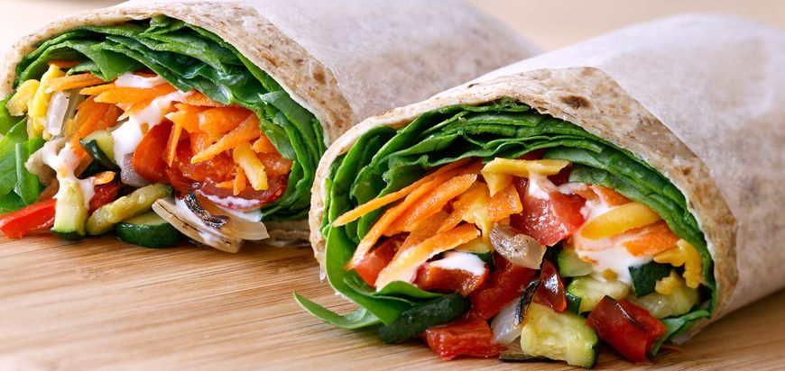
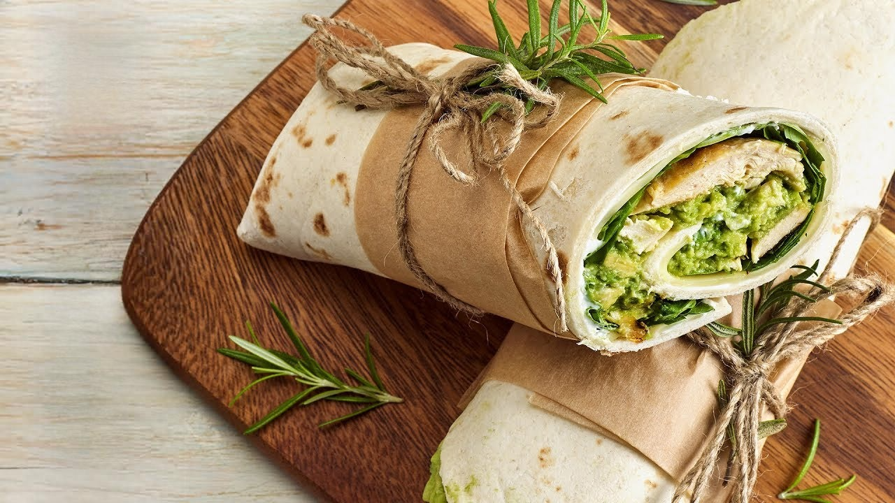
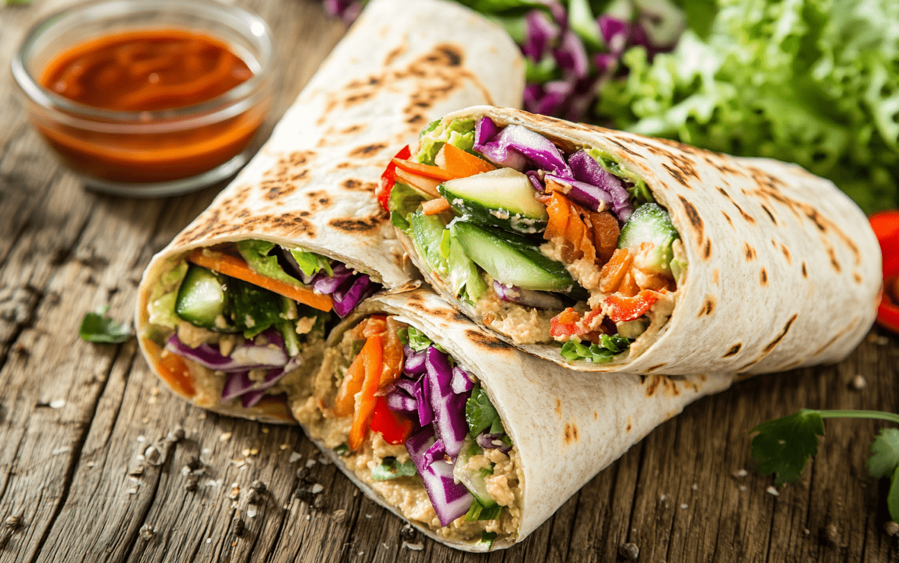
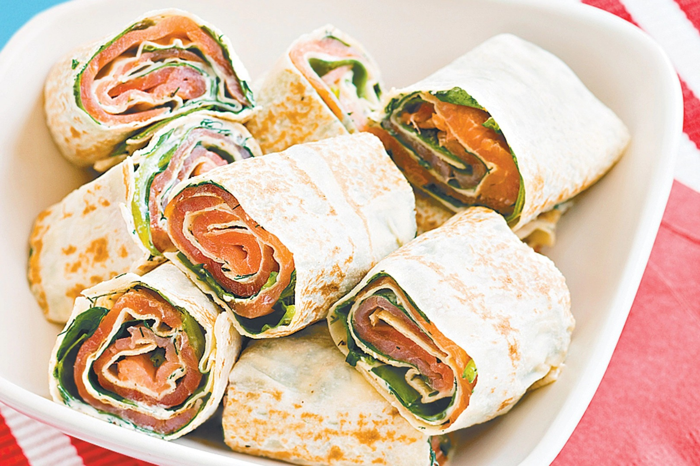
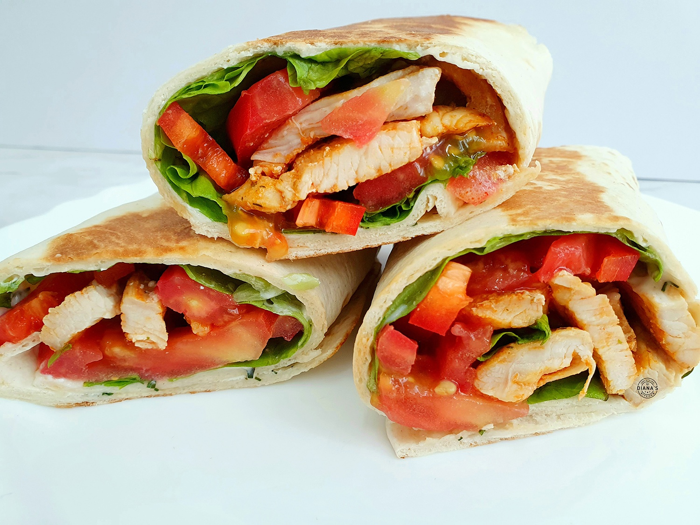

Meniul Wrap-uri
Wrap-uri din cereale integrale, umplute cu pui la grătar și legume proaspete.
- Ingrediente: Lipie integrală, piept de pui la grătar, salată, roșii, sos tzatziki.
- Valori nutriționale: 300 kcal, 30g proteine, 35g carbohidrați, 7g grăsimi.

Preț: 28 RON
Wrap cu pui și avocado, o combinație delicioasă și sănătoasă.
- Ingrediente: Lipie integrală, piept de pui la grătar, avocado, salată, roșii, sos de iaurt.
- Valori nutriționale: 320 kcal, 28g proteine, 30g carbohidrați, 12g grăsimi.

Preț: 30 RON
Wrap vegetarian cu hummus, o opțiune ușoară și plină de savoare.
- Ingrediente: Lipie integrală, hummus, castraveți, roșii, morcovi, salată verde.
- Valori nutriționale: 280 kcal, 10g proteine, 35g carbohidrați, 8g grăsimi.

Preț: 27 RON
Wrap cu somon afumat, perfect pentru o masă ușoară și bogată în omega-3.
- Ingrediente: Lipie integrală, somon afumat, cremă de brânză, salată, castraveți, mărar.
- Valori nutriționale: 310 kcal, 20g proteine, 25g carbohidrați, 15g grăsimi.

Preț: 32 RON
Wrap cu pui și legume la grătar, o alegere sănătoasă și plină de arome.
- Ingrediente: Lipie integrală, piept de pui la grătar, ardei, dovlecei, vinete, sos tzatziki.
- Valori nutriționale: 340 kcal, 30g proteine, 28g carbohidrați, 10g grăsimi.

Preț: 31 RON